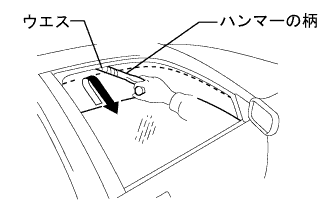
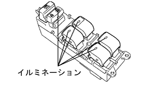
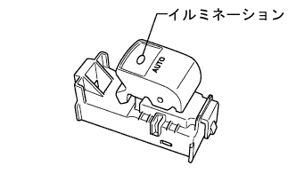

Power Window System Function Inspection |
| 1. Manual Operation Function Inspection |
Basic Function Inspection
Turn IG ON.
Check that each power window (door glass) rises when the remote switch for each seat on the power window regulator master switch assembly is operated to the UP side, and lowers when operated to the DOWN side.
Check that each power window (door glass) rises when the power window regulator switch assembly (front passenger side) and rear power window regulator switch assemblies (rear LH and RH) are operated to the UP side, and lowers when operated to the DOWN side.
Check that when the window lock switch on the power window regulator master switch assembly is set to LOCK, the power windows (door glass) for all seats except the driver seat do not operate.
| 2. AUTO Operation Function Inspection |
Basic Function Inspection (Driver Side)
Turn IG ON.
Check that when the driver side switch on the power window regulator master switch assembly is operated to the DOWN side to the 2 step, the power window (door glass) performs AUTO DOWN operation and becomes fully open.
Check that when the driver side switch on the power window regulator master switch assembly is operated to the UP side to the 2 step, the power window (door glass) performs AUTO UP operation and becomes fully closed.
Check that the door glass stops when the driver side switch on the power window regulator master switch assembly is operated to the UP side during AUTO DOWN operation. (However, if the switch is held on the UP side, operation changes to manual operation.)
Check that the door glass stops when the driver side switch on the power window regulator master switch assembly is operated to the DOWN side during AUTO UP operation. (However, if the switch is held on the DOWN side, operation changes to manual operation.)
Basic Function Inspection (Except Driver Side)
Turn IG ON.
Check that when the switches of the power window regulator switch assembly and rear power window regulator switch assemblies are operated to the DOWN side to the 2 step, the power windows (door glass) perform AUTO DOWN operation and become fully open.
Check that when the switches of the power window regulator switch assembly and rear power window regulator switch assemblies are operated to the UP side to the 2 step, the power windows (door glass) perform AUTO UP operation and become fully closed.
Check that each door glass stops when the switches of the power window regulator switch assembly and rear power window regulator switch assemblies are operated to the UP side during AUTO DOWN operation. (However, if the switch is held on the UP side, operation changes to manual operation.)
Check that each door glass stops when the switches of the power window regulator switch assembly and rear power window regulator switch assemblies are operated to the DOWN side during AUTO UP operation. (However, if the switch is held on the DOWN side, operation changes to manual operation.)
| 3. Key-off Operation Function Inspection (All Seats) |
Check that after the IG is turned from ON to OFF, the power windows for all seats can be operated with the power window regulator master switch assembly. Also check that they can no longer be operated after the driver side door is opened and closed.
Check that after the IG is turned from ON to OFF, the power windows for each seat except the driver seat can be operated with the power window regulator switch assembly and rear power window regulator switch assemblies. Also check that they can no longer be operated after the driver side door is opened and closed.
Check that the power windows for all seats can no longer be operated approximately 45 seconds after the IG is turned from ON to OFF.
| 4. Jam Protection Function Inspection (All Seats) |
Basic Function Inspection
 |
Fully open the power windows (door glass) for all seats.
Wrap a shop rag around a hammer handle and hold the hammer handle at the fully closed position of the door glass.
Check that when the power window (door glass) is operated to fully close by AUTO UP or manual UP, it stops at the position where it contacts the hammer handle, then operates DOWN and stops at a position approximately 200 mm lower.
Check that the window does not operate UP with the power window regulator master switch assembly while it is lowering.
| 5. Inspect Power Window Regulator Master Switch Assembly |
 |
Illumination Inspection
Check that the illumination (LED) on the switch portion of the power window regulator master switch assembly comes on when the IG is turned OFF → ON with the connector connected.
| 6. Inspect Power Window Regulator Switch Assembly |
 |
Illumination Inspection
Check that the illumination (LED) on the switch portion of the power window regulator switch assembly comes on when the IG is turned OFF → ON with the connector connected.
| 7. Inspect Power Window Regulator Switch Assembly RR |
Illumination Inspection
Check that the illumination (LED) on the switch portion of the rear power window regulator switch assembly comes on when the IG is turned OFF → ON with the connector connected.